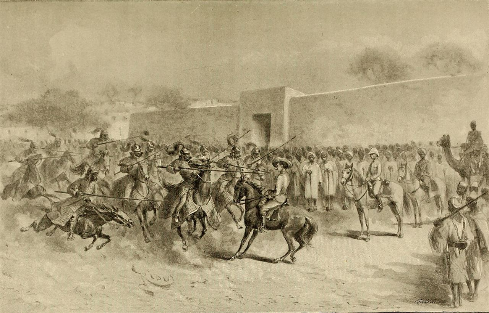
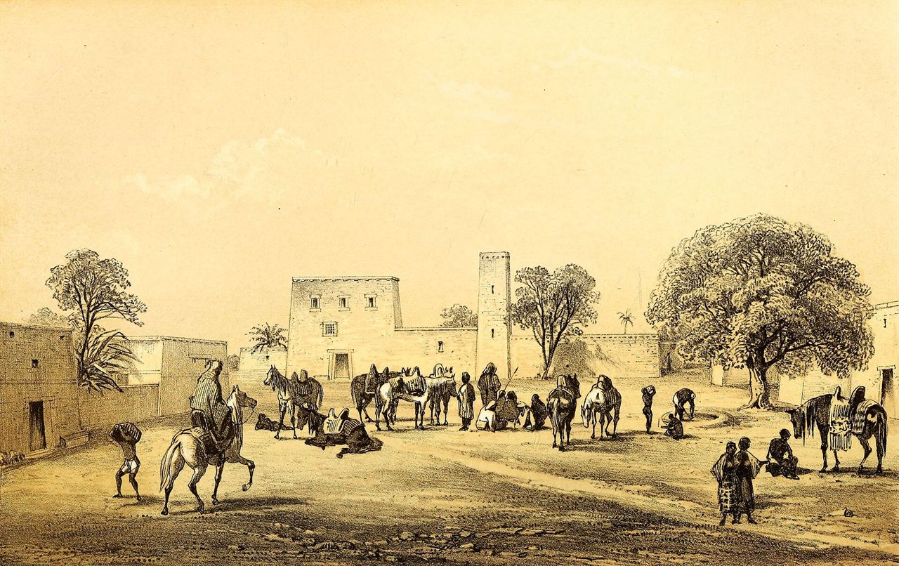
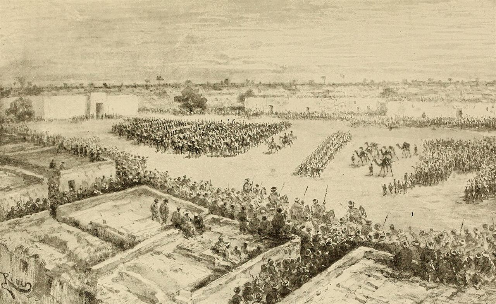

Astride Lake Chad, where the Sahara meets the savanna, an African empire grew rich on the caravans of salt, gold and slaves that crossed the desert — and simply refused to die. For roughly a millennium Kanem-Bornu held the centre of the continent, kept its own chronicles, and outlasted almost every kingdom that rose and fell around it.
Most empires measure their lives in decades or centuries. Kanem-Bornu measured its life in a thousand years, and its ruling Sayfawa dynasty lasted some seven centuries — longer than the Romanovs, the Ottomans or the Hapsburgs. Almost nobody outside the region has heard of it. This is its story, from the sources it left behind — including a king-list and eye-witness war chronicles written in its own court.
The state began east of Lake Chad, in the land the sources call Kanem. Here a dynasty — later called the Sayfawa — rose to power among the Kanuri-speaking peoples, ruling through a sacred king, the mai. His strength rested on two assets the desert itself supplied: the horse and the camel.
Camel-borne caravans and horse-borne armies let Kanem control the trade routes that carried salt from the Sahara, gold and slaves, and goods south toward the forest belt and north to Tripoli and Egypt. Whoever held the routes around Lake Chad held the middle of Africa.
Around 1085, under the mai Hummay, the Sayfawa adopted Islam. The new faith linked Kanem to the wider Muslim world of scholars, merchants and law, strengthened the dynasty's legitimacy, and gave its kings a place in the diplomacy of the whole Mediterranean and Middle East. Kanem was no remote curiosity; it corresponded with the great powers of the age.

Kanem reached its first height under the mai Dunama Dabbalemi (ruled c. 1221–1259). He pushed the empire's reach in every direction, opened trade and diplomacy with the Hafsid court in Tunis, and is remembered in the chronicles for hosting scholars and for the famous gifts exchanged across the desert — including, the stories say, a giraffe sent north as a marvel.
Kanem grew wealthy and confident. Its kings controlled the Saharan routes, taxed the caravans, and ruled an empire that stretched from the desert's edge to the grasslands. But power at the centre always came with feuds around it — rival branches of the royal family, and peoples who resented Kanem's rule.
In the fourteenth century those tensions broke open. A rival people, the Bulala, drove the Sayfawa kings out of Kanem, and in the 1380s the court abandoned the old capital, Njimi, and moved west of Lake Chad — to Bornu. It was the kind of blow that ends most states. For the Sayfawa, it was a relocation.
The chronicles trace the dynasty to Sayf ibn Dhi Yazan, a hero of Arabian legend, implying the kings were really Arab.
The Arabian genealogy is a legitimating legend, a common and very effective way for later Islamic dynasties to claim prestige. The kingdom's language, people and roots are firmly Central African — the legend says more about politics than about ancestry.
From their new base west of the lake, the Sayfawa kings rebuilt. Under mai Ali Ghaji (c. 1476–1503) they founded a new capital, Ngazargamu, reformed the army and the state, and turned Bornu back into a power that the desert had to reckon with. The comeback reached its peak under one of Africa's great rulers: mai Idris Alooma (Idris III, ruled c. 1564–1603).
Idris Alooma was a reformer as well as a conqueror. He is credited with restructuring the army, building roads and forts, promoting Islam and its scholars, and adopting a decisive new technology: an elite corps of musketeers, obtained — with instructors — through the Ottoman-influenced markets of North Africa. Bornu's gunmen gave it a firepower edge that redrew the balance of power in the Central Sudan.
What makes his reign extraordinary is the record. His campaigns were written down by a court cleric, Ahmad ibn Furtu, whose Book of the Holy Wars describes the kings' campaigns in the kings' own world — one of the rare cases where we can read medieval African history through African eyes.
After Idris Alooma, Bornu did not so much fall as endure. Through the seventeenth and eighteenth centuries the empire remained one of the major powers of the Sahel: court and capital at Ngazargamu, a standing army, a network of vassal chiefs, and command of the trade in salt, horses and captives that linked the lakeside to the Mediterranean.
This is the empire's deepest claim to fame: longevity. While states across the Sahel and the Sahara rose and vanished, Kanem-Bornu kept going — a stability built on flexible rule, trade, Islam and the prestige of a dynasty that seemed as old as the land itself. The king-list kept in its own tradition records the Sayfawa line unbroken across some seven centuries.
A kingdom that lasts that long is never static. The balance of power shifted constantly — between the mai and his great officials, between the capital and the provinces, and between Bornu and its neighbours. But the centre held.

The nineteenth century brought a storm from within Africa itself. The great Fulani jihad of Usman dan Fodio swept across the Sahel from 1804; in 1808 its armies sacked Ngazargamu and the old order nearly collapsed. Bornu was saved by a scholar and soldier, Muhammad al-Amin al-Kanemi. Rallying the people, he threw back the jihadists and became the real power behind the throne.
From then on the ancient Sayfawa mai ruled in name while the Shehu — the founder and his sons — ruled in fact. Around 1814 they built a new capital, Kukawa, and Bornu entered its final century still a substantial state. The last Sayfawa mai died in 1846, closing a dynasty that had lasted some seven hundred years.
The end, when it came, was not a defeat by any supposed backwardness. It came through the brutal politics of the wider region and the European scramble for Africa. In 1893 the Sudanese warlord Rabih az-Zubayr seized Bornu; in 1900 Rabih fell to the French at the Battle of Kousséri, and the lands of Kanem-Bornu were carved between French, British and German colonies. A thousand years of sovereignty ended not with a whimper, but in the fire of an imperial age.
“African states fell to Europe because they were primitive and stuck in the past.â€
Bornu fields musketeers, built capitals and governed a region for centuries — and its end came through an African warlord and a continent-wide imperial carve-up, not technological innocence. Its fate was shared by every structured state caught in the scramble, Europe's included.
Astride Lake Chad, Kanem-Bornu grew rich on the Saharan caravans and lived for roughly a thousand years — one of the longest-running states in human history, ruled by a dynasty that outlasted almost every other on earth.
The Kanuri kingdom of Kanem rises east of the lake, built on horses, camels and the Saharan trade.
Under mai Hummay the Sayfawa dynasty embraces Islam, linking Kanem to the wider world.
Kanem reaches its first height: expansion, diplomacy with Tunis, and command of the desert routes.
Driven from Kanem by the Bulala, the court relocates west of Lake Chad — and survives.
A new capital at Ngazargamu and a reformed state renew the empire's power.
Bornu's greatest king: a musket corps, forts and roads, and recovered Kanem — recorded by his own court chronicler.
The empire spans the Central Sudan, its wealth built on salt, horses and the caravan trade.
The Fulani jihad overwhelms the capital; the old order nearly falls.
The scholar-soldier al-Kanemi saves Bornu and founds the new capital at Kukawa.
The Sayfawa line — seven centuries old — ends; the Shehus rule alone.
The warlord Rabih az-Zubayr seizes the empire in the chaos of the scramble for Africa.
Rabih falls to the French; Kanem-Bornu is divided among European empires. A thousand years end.
The story rests on Kanem-Bornu's own records — its royal king-list and the court chronicles of Ahmad ibn Furtu — alongside the Arabic geographers and modern historians. Dates and figures are approximate and disputed; where that is so, this page says so.